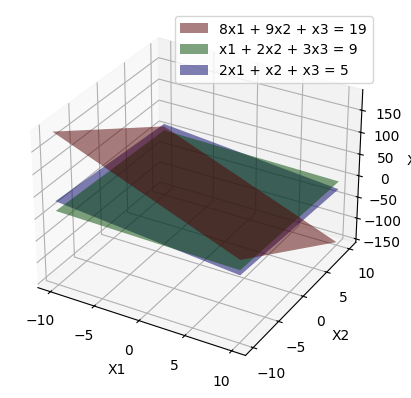

Menggambar Bidang pada Ruang Tiga Dimensi menggunakan Matplotlib#
PERSAMAAN YANG AKAN DI GAMBAR:
\(8x_1 + 9x_2 + x_3 = 19\)
\(x_1 + 2x_2 + 3x_3 = 9\)
\(2x_1 + x_2 + x_3 = 5\)
#code
import numpy as np
import matplotlib.pyplot as plt
# Membuat Rentang x1 dan x2
rentang_x1 = np.linspace(-10,10,50) # membuat garis x1 dengan rentang -10 dampai 10, dan 50 untuk resolusi bidang yang akan kita buat
rentang_x2 = np.linspace(-10,10,50)
# Mencari x1, x2 dan x3
x1, x2 = np.meshgrid(rentang_x1, rentang_x2)
x3_1 = 19 - 8*x1 - 9*x2
x3_2 = (9 - x1 - 2*x2) / 3
x3_3 = 5 - 2*x1 - x2
# Membuat bidang
fig = plt.figure()
ax = fig.add_subplot(111, projection="3d")
# Membuat bidang persamaan 1
# keterangan :
# alpha = transparansi
# rstride = kepadatan gambar sumbu x1
# cstride = kepadatan gambar sumbu x2
# color = warna bidang
ax.plot_surface(x1,x2,x3_1, alpha=0.5, rstride=100, cstride=100, color="r", label="8x1 + 9x2 + x3 = 19")
# membuat bidang persamaan 2
ax.plot_surface(x1,x2,x3_2, alpha=0.5, rstride=100, cstride=100, color="g", label="x1 + 2x2 + 3x3 = 9")
# Membuat bidang persamaan 3
ax.plot_surface(x1,x2,x3_3, alpha=0.5, rstride=100, cstride=100, color="b", label="2x1 + x2 + x3 = 5")
# membuat ketrangan sumbu
ax.set_xlabel("X1")
ax.set_ylabel("X2")
ax.set_zlabel("X3")
# Menggambar bidang
plt.legend()
plt.show()
